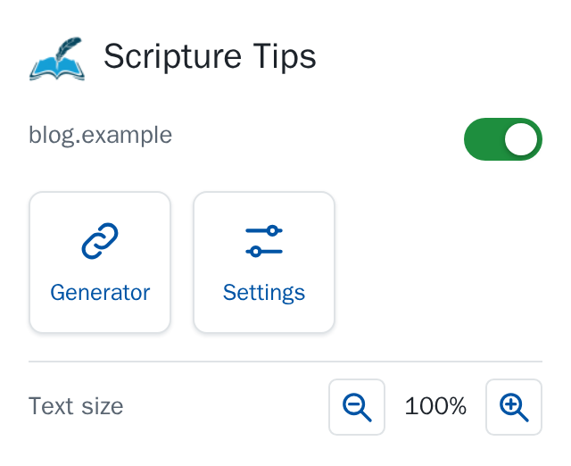

On some sites you may not want references linked. You can turn the extension off for one site without affecting any other.

The links go away at once, on every open page of that site. Slide the switch back to the right (green) to bring them back.
The settings page lists the sites under Sites turned off, each as a card, always in alphabetical order. Add a site adds a card ready to type in (write it as in the address bar, example.org; a whole address is cut down to its site). Click a card's name to change it, and remove it with the red round ×, which asks first.
A site is its exact name: turning it off on example.org doesn't turn it off on forum.example.org.